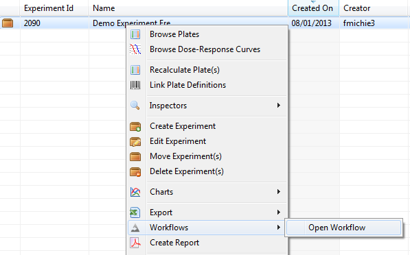
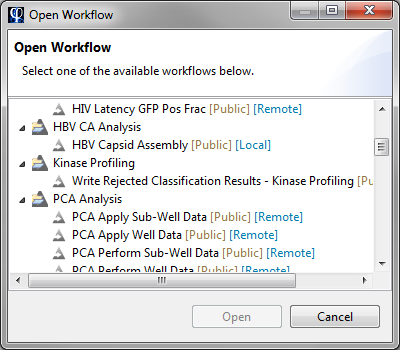
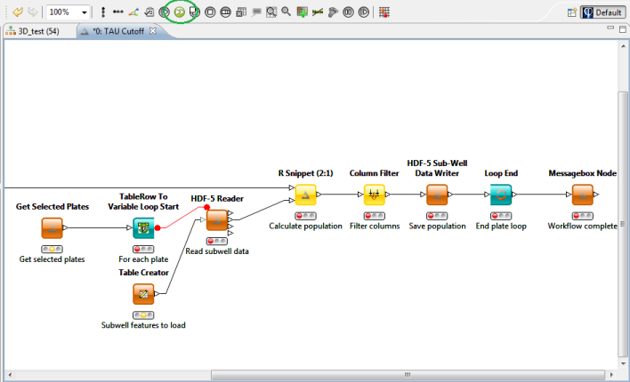

Phaedra contains a workflow engine. This component allows you to execute workflows on a set of plates or experiments.
A workflow is a set of actions that are performed in a fixed order (or 'flow'). Several examples of how workflows can be used:
This topic explains how to run workflows. If you wish to design a new workflow, please contact a Phaedra administrator.
To run a workflow on a plate or experiment, right-click on it and select Workflows > Open workflow.

In the dialog that appears, you can select one of the available workflows.

When you select a workflow and click Open, the workflow view will open.
To run the workflow, click on the green Run All button in the toolbar (or press Shift + F7).

While the workflow is running, the traffic lights of the workflow actions will change from red (queued)to green (completed). When all actions have been completed, a message will appear.
At that point, you can close the workflow view. If Phaedra asks you to save the workflow, select No.